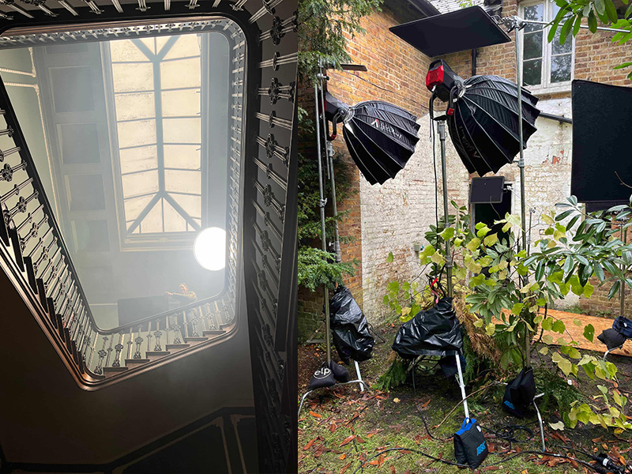
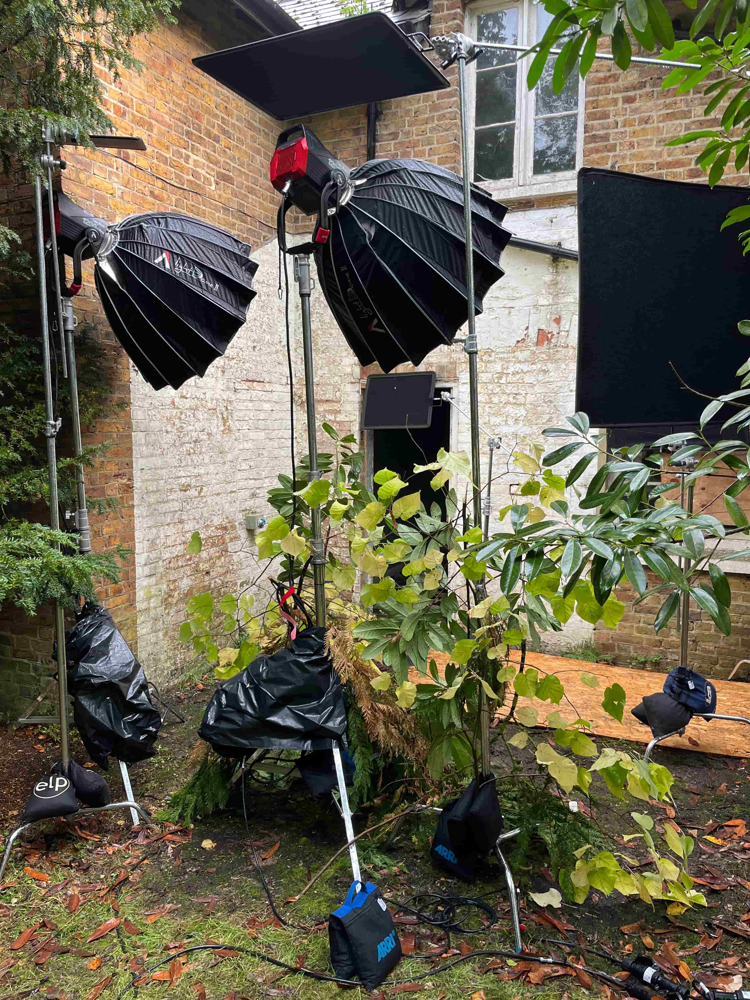
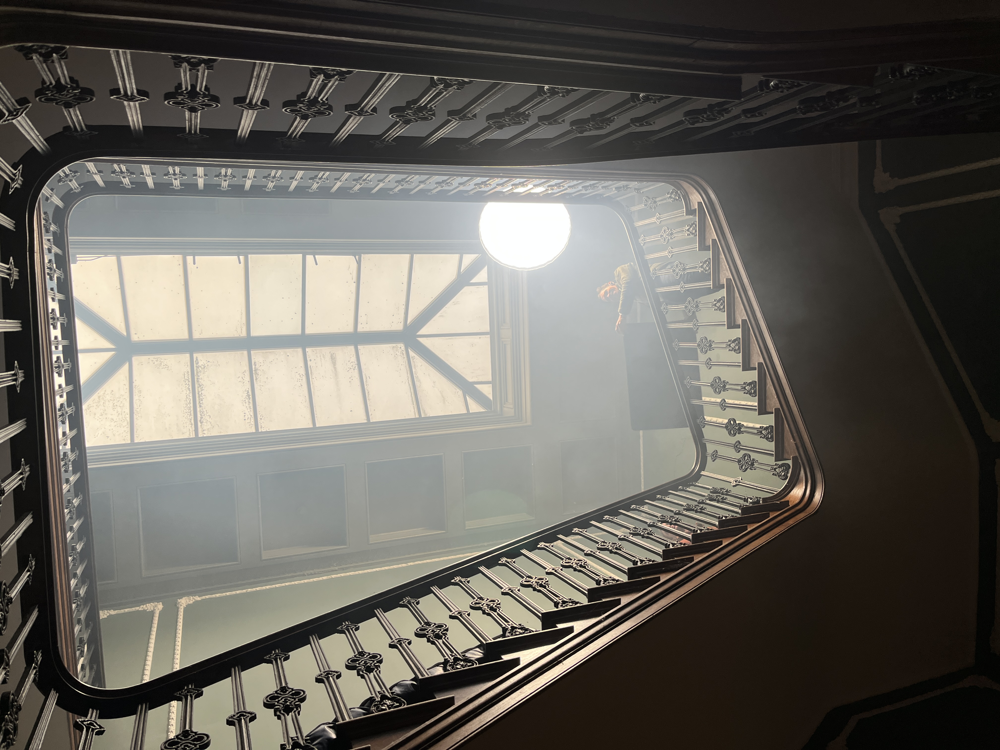

I recently worked in the Lighting department as an on-set assistant/spark on the feature film titled One Last Shot. This was an action packed movie where my role involved assisting the Gaffer with setting up Apeture, Arri, Astera & Dedo lights using a variety of different rigging options for the duration of the production.
This was a fast paced and intense role that required a lot of specialist knowledge and an acute attention to detail.


